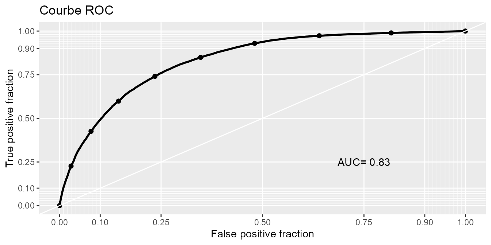
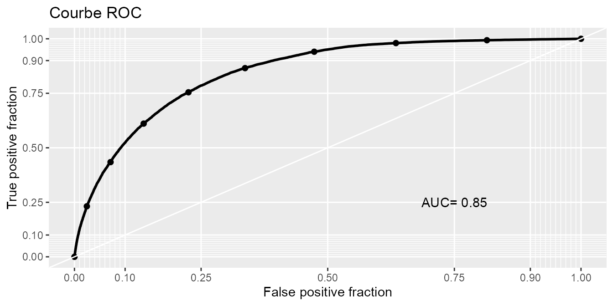
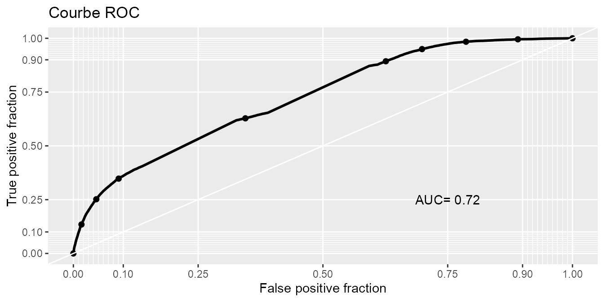
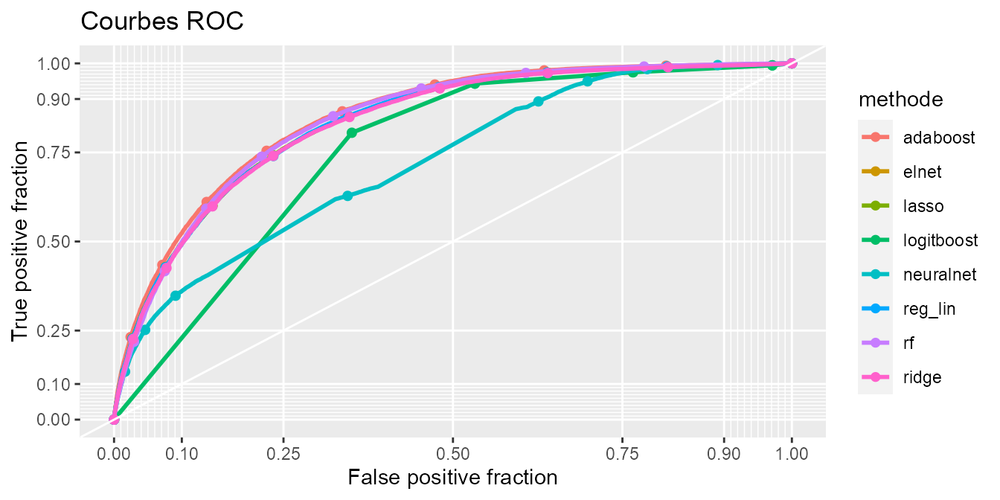
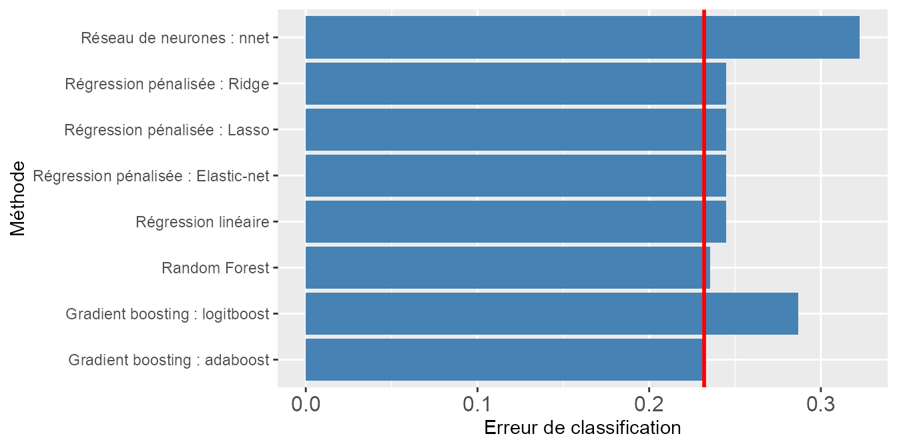
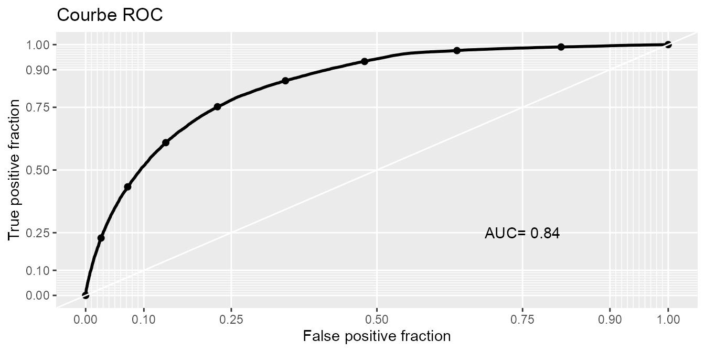
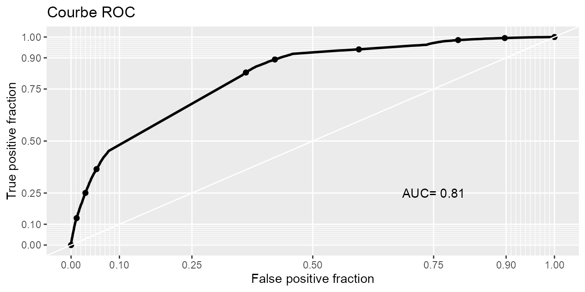
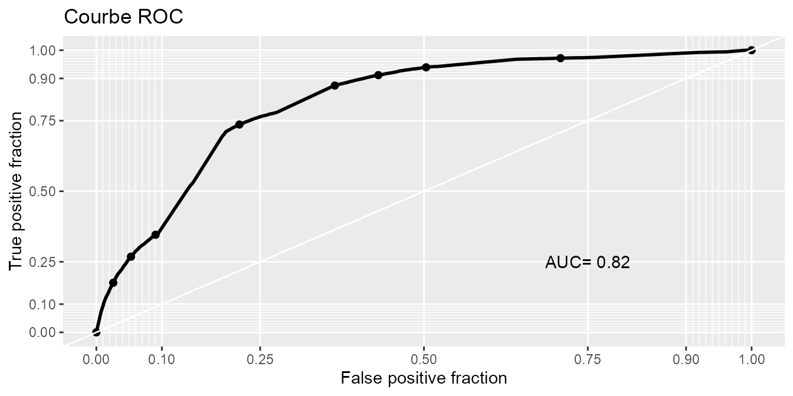

Prévisions des accidents ayant entrainés des blessures/décès
Source:vignettes/modeles.Rmd
modeles.RmdDans ce document on se propose de modéliser la variable grav afin de prévoir si un accident aura entraîné des blessures (ou le décès) ou non.
Nous chargeons les packages R nécessaires à cette étude.
library(tidyverse)
#> -- Attaching packages --------------------------------------- tidyverse 1.3.0 --
#> v ggplot2 3.3.2 v purrr 0.3.4
#> v tibble 3.0.4 v dplyr 1.0.2
#> v tidyr 1.1.2 v stringr 1.4.0
#> v readr 1.4.0 v forcats 0.5.0
#> -- Conflicts ------------------------------------------ tidyverse_conflicts() --
#> x dplyr::filter() masks stats::filter()
#> x dplyr::lag() masks stats::lag()
library(rsample)
library(doParallel) # pour paralléliser
#> Warning: le package 'doParallel' a été compilé avec la version R 4.0.3
#> Le chargement a nécessité le package : foreach
#>
#> Attachement du package : 'foreach'
#> The following objects are masked from 'package:purrr':
#>
#> accumulate, when
#> Le chargement a nécessité le package : iterators
#> Le chargement a nécessité le package : parallel
library(caret)
#> Warning: le package 'caret' a été compilé avec la version R 4.0.3
#> Le chargement a nécessité le package : lattice
#>
#> Attachement du package : 'caret'
#> The following object is masked from 'package:purrr':
#>
#> lift
library(glmnet)
#> Le chargement a nécessité le package : Matrix
#>
#> Attachement du package : 'Matrix'
#> The following objects are masked from 'package:tidyr':
#>
#> expand, pack, unpack
#> Loaded glmnet 4.0-2
library(skimr)
library(plotROC) # Pour la courbe ROC et l'AUC
#> Warning: le package 'plotROC' a été compilé avec la version R 4.0.3
library(ACC)
#>
#> Attachement du package : 'ACC'
#> The following object is masked from 'package:tidyr':
#>
#> populationCréation de l’indicatrice accident avec blessures (yc décès) oui/non
data(population, package = "ACC")
data(accidents, package = "ACC")
accidents = mutate_pour_modele(accidents, population)
#> Joining, by = "dep"
accidents <- accidents %>%
mutate(Y = factor(ifelse(
grav == "Indemne","Indemne",
"Blessures"))) %>%
select(-Num_Acc,-grav) %>%
select(Y, everything()) %>%
mutate_if(is.character, factor)
skim(accidents)| Name | accidents |
| Number of rows | 480116 |
| Number of columns | 22 |
| _______________________ | |
| Column type frequency: | |
| factor | 22 |
| ________________________ | |
| Group variables | None |
Variable type: factor
| skim_variable | n_missing | complete_rate | ordered | n_unique | top_counts |
|---|---|---|---|---|---|
| Y | 0 | 1 | FALSE | 2 | Ble: 283308, Ind: 196808 |
| catu | 0 | 1 | FALSE | 3 | Con: 352837, Pas: 84454, Pié: 42825 |
| sexe | 0 | 1 | FALSE | 2 | Mas: 330261, Fém: 149855 |
| secu1 | 0 | 1 | FALSE | 5 | Voi: 287649, Deu: 87447, Aut: 47589, Pié: 42825 |
| catv | 0 | 1 | FALSE | 11 | VL : 317229, 2 r: 91965, VU : 26533, Bic: 18189 |
| lum | 0 | 1 | FALSE | 4 | Ple: 328909, Nui: 73723, Nui: 47243, Cré: 30241 |
| agg | 0 | 1 | FALSE | 2 | En : 297755, Hor: 182361 |
| atm | 0 | 1 | FALSE | 9 | Nor: 388768, Plu: 49335, Tem: 14603, Plu: 10637 |
| col | 0 | 1 | FALSE | 6 | 2 v: 138808, Aut: 135253, 2 v: 62946, 3 v: 61726 |
| intersection | 0 | 1 | FALSE | 5 | Hor: 329587, Int: 129291, Gir: 14785, Pla: 5800 |
| mois_acc | 0 | 1 | TRUE | 12 | jui: 45582, oct: 44628, jui: 43731, sep: 43429 |
| jour_acc | 0 | 1 | TRUE | 7 | ven: 79923, jeu: 70085, sam: 69769, mer: 68885 |
| catr | 0 | 1 | FALSE | 5 | Voi: 216407, Rou: 167221, Aut: 52132, Rou: 34566 |
| circ | 0 | 1 | FALSE | 4 | Bid: 290007, A s: 84773, A c: 74650, Aut: 30686 |
| prof | 0 | 1 | FALSE | 3 | Pla: 367510, Pen: 69847, Aut: 42759 |
| plan | 0 | 1 | FALSE | 3 | Rec: 362988, Non: 76349, Non: 40779 |
| surf | 0 | 1 | FALSE | 3 | Nor: 373685, Ano: 87698, Non: 18733 |
| infra | 0 | 1 | FALSE | 3 | Non: 417492, Oui: 52820, Non: 9804 |
| situ | 0 | 1 | FALSE | 7 | Sur: 371402, Sur: 61979, Auc: 24299, Aut: 9369 |
| gr_dep | 0 | 1 | FALSE | 4 | 1 0: 202824, 500: 106481, plu: 100431, moi: 70380 |
| classe_age | 0 | 1 | FALSE | 8 | 25-: 102626, 15-: 99707, 35-: 77703, 45-: 69632 |
| cl_heure | 0 | 1 | FALSE | 4 | 16h: 152558, 10h: 133097, 20h: 100123, 7h-: 94338 |
Compte tenu de la taille (480116 observations) de nos données et des capacités limitées de nos machines, nous sommes contraints de faire cette modélisation sur un échantillon de nos données.
set.seed(123)
data <- sample_frac(accidents, size = .20, replace = FALSE)Afin de s’assurer qu’on n’a pas introduit un trop grand biais dans les données, on vérifie que les proportions de la variable d’intérêt \(Y\) n’est pas très différent entre l’échantillon ci-dessus et les données initiales.
prop.table(summary(accidents$Y))
#> Blessures Indemne
#> 0.5900824 0.4099176
prop.table(summary(data$Y))
#> Blessures Indemne
#> 0.5875571 0.4124429On introduit les fonctions suivantes pour mesurer l’erreur de prévision de nos modèles ultérieurement.
criteres_erreur_classif <- data.frame(Methode_abrev=character(),
Methode=character(),
Error=double(),
Sensitivity=double(),
Precision=double(),
Accuracy=double(),
Specificity=double(),
F1=double(),
AUC=double())
eval_prev_classif <- function(prev_proba, real, methode_abrev,methode){
prev <- (prev_proba>0.5)*1
cm <- table(real,prev)
print("Confusion matrix :")
print(cm)
assign(paste("cm",methode_abrev,sep="_"),cm,envir=.GlobalEnv)
cm_norm <- round(100*cm/sum(cm),digits=1)
print("Confusion matrix (%) :")
print(cm_norm)
assign(paste("cm_norm",methode_abrev,sep="_"),cm_norm,envir=.GlobalEnv)
tp <- cm[2,2]
fp <- cm[1,2]
tn <- cm[1,1]
fn <- cm[2,1]
error <- (fp+fn)/(tp+tn+fp+fn)
print(paste("Classification error : ",round(error,digits=3),sep=""))
sensitivity <- tp/(tp+fn)
print(paste("Sensitivity : ",round(sensitivity,digits=3),sep=""))
precision <- tp/(tp+fp)
print(paste("Precision : ",round(precision,digits=3),sep=""))
accuracy <- (tp+tn)/(tp+tn+fp+fn)
print(paste("Accuracy : ",round(accuracy,digits=3),sep=""))
specificity <- tn/(tn+fp)
print(paste("Specificity : ",round(specificity,digits=3),sep=""))
F1 <- 2*precision*sensitivity/(precision+sensitivity)
print(paste("F1 : ",round(F1,digits=3),sep=""))
if (is.factor(real)==TRUE){
df <- data.frame(prev_proba=prev_proba,
real=as.numeric(real)-1)
}
else{
df <- data.frame(prev_proba=prev_proba,
real=real)
}
graph <- ggplot(df,aes(d=real,m=prev_proba))+
geom_roc(labels=FALSE)
AUC <- round(calc_auc(graph)$AUC,digits=2)
print(paste("AUC : ",round(AUC,digits=3),sep=""))
tab <- get("criteres_erreur_classif",envir=globalenv())
tab <- rbind(tab,data.frame(Methode_abrev=methode_abrev,
Methode=methode,
Error=error,
Sensitivity=sensitivity,
Precision=precision,
Accuracy=accuracy,
Specificity=specificity,
F1=F1,
AUC=AUC))
assign("criteres_erreur_classif",tab,envir=.GlobalEnv)
graph+
style_roc(theme=theme_grey)+
annotate("text",x=0.75,y=0.25,label=paste("AUC=",AUC))+
labs(title="Courbe ROC")
}On sépare d’abord nos données pour garder un échantillon de test sur lequel appliquer le modèle finalement sélectionné. Et on évaluera nos modèles par une méthode de validation croisée en 4 blocs.
set.seed(123)
split <- rsample::initial_split(data, prop = 3/4, strata = Y)
don_apprentissage <- rsample::training(split)
don_test <- rsample::testing(split)
nb = 4
blocs = sample(rep(1:nb, length=nrow(don_apprentissage)), replace = FALSE)La fonction ci-après sera exécutée pour chacun des 4 blocs et permet d’ajuster plusieurs modèles aux données.
Pour des raisons de temps de calcul nous sommes contraints de ne pas exécuter les modèles SVM.
predict_cv <- function(bloc_ecart) {
## Pour calcul parallèle des paramètres
cl <- makePSOCKcluster(detectCores()-1L)
registerDoParallel(cl)
## Données
train <- don_apprentissage[blocs != bloc_ecart,]
test <- don_apprentissage[blocs == bloc_ecart,]
#matrices pour glmnet
train_matx <- donX[blocs != bloc_ecart,]
train_y <- donY[blocs != bloc_ecart]
test_matx <- donX[blocs == bloc_ecart,]
set.seed(123)
## Modèles
mod_lin <- train(fml , data=train, method="glm", trControl=controle, family = "binomial")
mod_ridge <- cv.glmnet(x= train_matx, y = train_y, alpha = 0, parallel = T, family = "binomial")
mod_lasso <- cv.glmnet(x= train_matx, y = train_y, alpha = 1, parallel = T, family = "binomial")
mod_elnet <- cv.glmnet(x= train_matx, y = train_y, alpha = 0.5, parallel = T, family = "binomial")
mod_rf <- train(fml ,data=train,method="ranger",trControl=controle, tuneGrid=rf_grid)
mod_Adaboost <- train(fml, data = train, method="gbm",distribution="adaboost", tuneGrid = boosting_grille, trControl=controle, verbose=FALSE)
mod_Logitboost <- train(fml, data = train, method="LogitBoost", trControl=controle, verbose=FALSE)
# mod_svm <- train(fml, data = train, method="svmLinear", tuneGrid = svr_C_Grid, trControl=controle)
# mod_svm_poly_d2 <- train(fml, data = train, method="svmPoly", tuneGrid = svr_poly_grid, trControl=controle)
mod_nnet <- train(fml, data = train, method="nnet", trControl=controle, verbose = FALSE)
stopCluster(cl)
## Previsions
tibble( Y = test$Y,
reg_lin = predict(mod_lin, test, type = "prob")[,2],
ridge = predict(mod_ridge, test_matx, type ="response", s="lambda.1se")[,1],
lasso = predict(mod_lasso, test_matx, type ="response", s="lambda.1se")[,1],
elnet = predict(mod_elnet, test_matx, type ="response", s="lambda.1se")[,1],
rf = predict(mod_rf, test, type ="prob")[,2],
adaboost = predict(mod_Adaboost, test, type ="prob")[,2],
logitboost = predict(mod_Logitboost, test, type ="prob")[,2],
# svm = predict(mod_svm, test, type ="prob")[,2],
# svm_poly_d2 = predict(mod_svm_poly_d2, test, type ="prob")[,2],
neuralnet = predict(mod_nnet, test, type ="prob")[,2]
)
}
# Paramètres pour caret
controle <- trainControl(method="cv",number=4, allowParallel = TRUE, classProbs=TRUE, verboseIter = T)
## Grilles de recherches d'hyper paramètres
rf_grid <- expand.grid(mtry=seq.int(1,ncol(don_apprentissage)-1, length.out = 5), splitrule = "gini", min.node.size=1L)
# svr_C_Grid <- expand.grid(C = seq(0.001, 2, length = 10))
# svr_poly_grid <- expand.grid(C = seq(0.001, 2, length = 10), degree =2, scale = 1)
boosting_grille <- expand.grid(n.trees = seq(1,25,5)*50, shrinkage = c(0.0001,0.001,0.01,0.1,1), n.minobsinnode = 10, interaction.depth = 2)Dans un premier temps nous allons modéliser selon la formule suivante
fml <- as.formula("Y ~ .")
## Données format matrice pour glmnet
donX <- model.matrix(fml,data=don_apprentissage)[,-1]
donY <- don_apprentissage$YLes résultats de la validation croisée en 4 blocs sont les suivants :
resultats = map_dfr(1:nb,predict_cv)
resultats
#> # A tibble: 72,018 x 9
#> Y reg_lin ridge lasso elnet rf adaboost logitboost neuralnet
#> <fct> <dbl> <dbl> <dbl> <dbl> <dbl> <dbl> <dbl> <dbl>
#> 1 Blessures 0.0111 0.0662 0.0287 0.0339 0.261 0.100 0.000911 0.413
#> 2 Blessures 0.302 0.100 0.140 0.127 0.221 0.125 0.0474 0.413
#> 3 Indemne 0.304 0.317 0.297 0.298 0.447 0.344 0.269 0.413
#> 4 Blessures 0.244 0.256 0.280 0.277 0.242 0.197 0.269 0.413
#> 5 Blessures 0.0462 0.183 0.0948 0.112 0.238 0.112 0.00669 0.413
#> 6 Indemne 0.462 0.478 0.459 0.464 0.525 0.459 0.731 0.413
#> 7 Blessures 0.227 0.494 0.343 0.379 0.213 0.311 0.731 0.413
#> 8 Blessures 0.115 0.172 0.124 0.134 0.152 0.0956 0.000911 0.413
#> 9 Indemne 0.655 0.605 0.666 0.657 0.593 0.692 0.731 0.413
#> 10 Indemne 0.717 0.628 0.650 0.647 0.704 0.737 0.731 0.413
#> # ... with 72,008 more rowsLa fonction introduite précédemment predict_cv ajuste les types de modèles suivants :
- régression logistique
- régression logistique ridge
- régression logistique lasso
- régression logistique elastic net
- forêt aléatoire
- gradient boosting méthode Adaboost
- gradient boosting méthode Logitboost
- réseau de neurones.
Comparons les résultats de ces différentes méthodes
eval_prev_classif(prev=resultats$elnet, real=resultats$Y, methode="Régression linéaire", methode_abrev="lm")
#> [1] "Confusion matrix :"
#> prev
#> real 0 1
#> Blessures 32389 9926
#> Indemne 7690 22013
#> [1] "Confusion matrix (%) :"
#> prev
#> real 0 1
#> Blessures 45.0 13.8
#> Indemne 10.7 30.6
#> [1] "Classification error : 0.245"
#> [1] "Sensitivity : 0.741"
#> [1] "Precision : 0.689"
#> [1] "Accuracy : 0.755"
#> [1] "Specificity : 0.765"
#> [1] "F1 : 0.714"
#> [1] "AUC : 0.83"
eval_prev_classif(prev=resultats$elnet, real=resultats$Y, methode="Régression pénalisée : Ridge", methode_abrev="ridge")
#> [1] "Confusion matrix :"
#> prev
#> real 0 1
#> Blessures 32389 9926
#> Indemne 7690 22013
#> [1] "Confusion matrix (%) :"
#> prev
#> real 0 1
#> Blessures 45.0 13.8
#> Indemne 10.7 30.6
#> [1] "Classification error : 0.245"
#> [1] "Sensitivity : 0.741"
#> [1] "Precision : 0.689"
#> [1] "Accuracy : 0.755"
#> [1] "Specificity : 0.765"
#> [1] "F1 : 0.714"
#> [1] "AUC : 0.83"
eval_prev_classif(prev=resultats$elnet, real=resultats$Y, methode="Régression pénalisée : Lasso", methode_abrev="lasso")
#> [1] "Confusion matrix :"
#> prev
#> real 0 1
#> Blessures 32389 9926
#> Indemne 7690 22013
#> [1] "Confusion matrix (%) :"
#> prev
#> real 0 1
#> Blessures 45.0 13.8
#> Indemne 10.7 30.6
#> [1] "Classification error : 0.245"
#> [1] "Sensitivity : 0.741"
#> [1] "Precision : 0.689"
#> [1] "Accuracy : 0.755"
#> [1] "Specificity : 0.765"
#> [1] "F1 : 0.714"
#> [1] "AUC : 0.83"
eval_prev_classif(prev=resultats$elnet, real=resultats$Y, methode="Régression pénalisée : Elastic-net", methode_abrev="elnet")
#> [1] "Confusion matrix :"
#> prev
#> real 0 1
#> Blessures 32389 9926
#> Indemne 7690 22013
#> [1] "Confusion matrix (%) :"
#> prev
#> real 0 1
#> Blessures 45.0 13.8
#> Indemne 10.7 30.6
#> [1] "Classification error : 0.245"
#> [1] "Sensitivity : 0.741"
#> [1] "Precision : 0.689"
#> [1] "Accuracy : 0.755"
#> [1] "Specificity : 0.765"
#> [1] "F1 : 0.714"
#> [1] "AUC : 0.83"
eval_prev_classif(prev=resultats$rf, real=resultats$Y, methode="Random Forest", methode_abrev="RF")
#> [1] "Confusion matrix :"
#> prev
#> real 0 1
#> Blessures 33539 8776
#> Indemne 8178 21525
#> [1] "Confusion matrix (%) :"
#> prev
#> real 0 1
#> Blessures 46.6 12.2
#> Indemne 11.4 29.9
#> [1] "Classification error : 0.235"
#> [1] "Sensitivity : 0.725"
#> [1] "Precision : 0.71"
#> [1] "Accuracy : 0.765"
#> [1] "Specificity : 0.793"
#> [1] "F1 : 0.717"
#> [1] "AUC : 0.84"
eval_prev_classif(prev=resultats$adaboost, real=resultats$Y, methode="Gradient boosting : adaboost", methode_abrev="gbm_ada")
#> [1] "Confusion matrix :"
#> prev
#> real 0 1
#> Blessures 33302 9013
#> Indemne 7696 22007
#> [1] "Confusion matrix (%) :"
#> prev
#> real 0 1
#> Blessures 46.2 12.5
#> Indemne 10.7 30.6
#> [1] "Classification error : 0.232"
#> [1] "Sensitivity : 0.741"
#> [1] "Precision : 0.709"
#> [1] "Accuracy : 0.768"
#> [1] "Specificity : 0.787"
#> [1] "F1 : 0.725"
#> [1] "AUC : 0.85"
eval_prev_classif(prev=resultats$logitboost, real=resultats$Y, methode="Gradient boosting : logitboost", methode_abrev="gbm_logit")
#> [1] "Confusion matrix :"
#> prev
#> real 0 1
#> Blessures 27471 14844
#> Indemne 5785 23918
#> [1] "Confusion matrix (%) :"
#> prev
#> real 0 1
#> Blessures 38.1 20.6
#> Indemne 8.0 33.2
#> [1] "Classification error : 0.286"
#> [1] "Sensitivity : 0.805"
#> [1] "Precision : 0.617"
#> [1] "Accuracy : 0.714"
#> [1] "Specificity : 0.649"
#> [1] "F1 : 0.699"
#> [1] "AUC : 0.75"
eval_prev_classif(prev=resultats$neuralnet, real=resultats$Y, methode="Réseau de neurones : nnet", methode_abrev="nnet")
#> [1] "Confusion matrix :"
#> prev
#> real 0 1
#> Blessures 37874 4441
#> Indemne 18788 10915
#> [1] "Confusion matrix (%) :"
#> prev
#> real 0 1
#> Blessures 52.6 6.2
#> Indemne 26.1 15.2
#> [1] "Classification error : 0.323"
#> [1] "Sensitivity : 0.367"
#> [1] "Precision : 0.711"
#> [1] "Accuracy : 0.677"
#> [1] "Specificity : 0.895"
#> [1] "F1 : 0.484"
#> [1] "AUC : 0.72"
criteres_erreur_classif
#> Methode_abrev Methode Error Sensitivity
#> 1 lm Régression linéaire 0.2446055 0.7411036
#> 2 ridge Régression pénalisée : Ridge 0.2446055 0.7411036
#> 3 lasso Régression pénalisée : Lasso 0.2446055 0.7411036
#> 4 elnet Régression pénalisée : Elastic-net 0.2446055 0.7411036
#> 5 RF Random Forest 0.2354134 0.7246743
#> 6 gbm_ada Gradient boosting : adaboost 0.2320114 0.7409016
#> 7 gbm_logit Gradient boosting : logitboost 0.2864423 0.8052385
#> 8 nnet Réseau de neurones : nnet 0.3225444 0.3674713
#> Precision Accuracy Specificity F1 AUC
#> 1 0.6892201 0.7553945 0.7654260 0.7142208 0.83
#> 2 0.6892201 0.7553945 0.7654260 0.7142208 0.83
#> 3 0.6892201 0.7553945 0.7654260 0.7142208 0.83
#> 4 0.6892201 0.7553945 0.7654260 0.7142208 0.83
#> 5 0.7103726 0.7645866 0.7926031 0.7174522 0.84
#> 6 0.7094455 0.7679886 0.7870022 0.7248324 0.85
#> 7 0.6170476 0.7135577 0.6492024 0.6986928 0.75
#> 8 0.7107971 0.6774556 0.8950490 0.4844759 0.72
criteres_erreur_classif_plot <- criteres_erreur_classif
error_min <- min(criteres_erreur_classif_plot$Error)
error_min
#> [1] 0.2320114
error_max <- max(criteres_erreur_classif_plot$Error)
error_max
#> [1] 0.3225444On peut également représenter graphiquement ces résultats en regroupant toutes les courbes ROC sur un même graphique :
resultats %>%
gather(methode, prev_proba, -Y) %>%
ggplot(aes(d=Y, m=prev_proba, color = methode)) +
geom_roc(labels = FALSE) +
style_roc(theme = theme_grey)+
labs(title="Courbes ROC")
#> Warning: attributes are not identical across measure variables;
#> they will be dropped
#> Warning in verify_d(data$d): D not labeled 0/1, assuming Blessures = 0 and
#> Indemne = 1!
Ou bien en mesurant l’erreur :
ggplot(data=criteres_erreur_classif_plot,aes(x=Methode,y=Error))+
geom_bar(stat="identity",fill="steelblue")+
geom_hline(yintercept=error_min,color="red",size=1)+
scale_y_continuous(breaks=seq(from=0,to=ceiling(error_max),by=0.1))+
theme(axis.text.x=element_text(size=12))+
labs(x="Méthode",y="Erreur de classification")+
coord_flip()
ggplot(data=criteres_erreur_classif_plot,aes(x=Methode,y=100*Error))+
geom_bar(stat="identity",fill="steelblue")+
geom_hline(yintercept=100*error_min,color="red",size=1)+
scale_y_continuous(breaks=seq(from=0,to=ceiling(100*error_max),by=10))+
theme(axis.text.x=element_text(size=12))+
labs(x="Méthode",y="Erreur de classification (%)") +
coord_flip()Modèle de mélange I (erreur moyenne sur tous les modèles )
moyenne_mod <- resultats %>%
rowwise() %>%
mutate(moyenne = mean(c_across(!matches("Y"))))
eval_prev_classif(prev_proba = moyenne_mod$moyenne,
real = moyenne_mod$Y,
methode_abrev = "agreg_moy",
methode = "Agrégation moyenne")
#> [1] "Confusion matrix :"
#> prev
#> real 0 1
#> Blessures 32805 9510
#> Indemne 7429 22274
#> [1] "Confusion matrix (%) :"
#> prev
#> real 0 1
#> Blessures 45.6 13.2
#> Indemne 10.3 30.9
#> [1] "Classification error : 0.235"
#> [1] "Sensitivity : 0.75"
#> [1] "Precision : 0.701"
#> [1] "Accuracy : 0.765"
#> [1] "Specificity : 0.775"
#> [1] "F1 : 0.725"
#> [1] "AUC : 0.84"
Modèle de mélange II (max)
max_mod <- resultats %>%
rowwise() %>%
mutate(max = max(c_across(!matches("Y"))))
eval_prev_classif(prev_proba = max_mod$max,
real = max_mod$Y,
methode_abrev = "agreg_max",
methode = "Agrégation moyenne")
#> [1] "Confusion matrix :"
#> prev
#> real 0 1
#> Blessures 24832 17483
#> Indemne 3408 26295
#> [1] "Confusion matrix (%) :"
#> prev
#> real 0 1
#> Blessures 34.5 24.3
#> Indemne 4.7 36.5
#> [1] "Classification error : 0.29"
#> [1] "Sensitivity : 0.885"
#> [1] "Precision : 0.601"
#> [1] "Accuracy : 0.71"
#> [1] "Specificity : 0.587"
#> [1] "F1 : 0.716"
#> [1] "AUC : 0.81"
Modèle de mélange III (min)
min_mod <- resultats %>%
rowwise() %>%
mutate(min = min(c_across(!matches("Y"))))
eval_prev_classif(prev_proba = min_mod$min,
real = min_mod$Y,
methode_abrev = "agreg_min",
methode = "Agrégation moyenne")
#> [1] "Confusion matrix :"
#> prev
#> real 0 1
#> Blessures 39381 2934
#> Indemne 20566 9137
#> [1] "Confusion matrix (%) :"
#> prev
#> real 0 1
#> Blessures 54.7 4.1
#> Indemne 28.6 12.7
#> [1] "Classification error : 0.326"
#> [1] "Sensitivity : 0.308"
#> [1] "Precision : 0.757"
#> [1] "Accuracy : 0.674"
#> [1] "Specificity : 0.931"
#> [1] "F1 : 0.437"
#> [1] "AUC : 0.82"
criteres_erreur_classif %>%
arrange(Error)
#> Methode_abrev Methode Error Sensitivity
#> 1 gbm_ada Gradient boosting : adaboost 0.2320114 0.7409016
#> 2 agreg_moy Agrégation moyenne 0.2352051 0.7498906
#> 3 RF Random Forest 0.2354134 0.7246743
#> 4 lm Régression linéaire 0.2446055 0.7411036
#> 5 ridge Régression pénalisée : Ridge 0.2446055 0.7411036
#> 6 lasso Régression pénalisée : Lasso 0.2446055 0.7411036
#> 7 elnet Régression pénalisée : Elastic-net 0.2446055 0.7411036
#> 8 gbm_logit Gradient boosting : logitboost 0.2864423 0.8052385
#> 9 agreg_max Agrégation moyenne 0.2900803 0.8852641
#> 10 nnet Réseau de neurones : nnet 0.3225444 0.3674713
#> 11 agreg_min Agrégation moyenne 0.3263073 0.3076120
#> Precision Accuracy Specificity F1 AUC
#> 1 0.7094455 0.7679886 0.7870022 0.7248324 0.85
#> 2 0.7007929 0.7647949 0.7752570 0.7245109 0.84
#> 3 0.7103726 0.7645866 0.7926031 0.7174522 0.84
#> 4 0.6892201 0.7553945 0.7654260 0.7142208 0.83
#> 5 0.6892201 0.7553945 0.7654260 0.7142208 0.83
#> 6 0.6892201 0.7553945 0.7654260 0.7142208 0.83
#> 7 0.6892201 0.7553945 0.7654260 0.7142208 0.83
#> 8 0.6170476 0.7135577 0.6492024 0.6986928 0.75
#> 9 0.6006442 0.7099197 0.5868368 0.7156952 0.81
#> 10 0.7107971 0.6774556 0.8950490 0.4844759 0.72
#> 11 0.7569381 0.6736927 0.9306629 0.4374491 0.82On remarque que l’aggrégation des différents modèles par la moyenne, donne de bons résultats néanmoins, dans un souci de sélectionner un modèle parcimonieux, nous ne retiendrons pas cette solution.
Synthèse
Ainsi pour cette étude, les méthodes de gradient boosting, plus précisément, la méthode Adaboost, donnent de meilleures prédictions au sens du taux de mal classés que les autres méthodes.
En optimisant les paramètres de l’algorithme de gradient boosting sur l’échantillon d’apprentissage nous avons trouvé une erreur d’environ 23,2%. La méthode étant choisie, il nous faut maintenant définir un modèle final.
Pour ce faire nous appliquons de nouveau la méthodologie de validation croisée pour optimiser ces paramètres.
cl <- makePSOCKcluster(detectCores()-1L)
registerDoParallel(cl)
modele_fin <- train(fml,
data = don_apprentissage,
method="gbm",
distribution="adaboost",
tuneGrid = boosting_grille,
trControl=controle,
verbose=FALSE)
stopCluster(cl)
modele_fin
#> Stochastic Gradient Boosting
#>
#> 72018 samples
#> 21 predictor
#> 2 classes: 'Blessures', 'Indemne'
#>
#> No pre-processing
#> Resampling: Cross-Validated (4 fold)
#> Summary of sample sizes: 54013, 54013, 54015, 54013
#> Resampling results across tuning parameters:
#>
#> shrinkage n.trees Accuracy Kappa
#> 1e-04 50 0.5875614 0.0000000
#> 1e-04 300 0.5875614 0.0000000
#> 1e-04 550 0.5875614 0.0000000
#> 1e-04 800 0.5875614 0.0000000
#> 1e-04 1050 0.5875614 0.0000000
#> 1e-03 50 0.5875614 0.0000000
#> 1e-03 300 0.5875614 0.0000000
#> 1e-03 550 0.5875614 0.0000000
#> 1e-03 800 0.7081979 0.3639756
#> 1e-03 1050 0.6961871 0.3511448
#> 1e-02 50 0.5875614 0.0000000
#> 1e-02 300 0.7205561 0.4266343
#> 1e-02 550 0.7395513 0.4660778
#> 1e-02 800 0.7442168 0.4755408
#> 1e-02 1050 0.7483824 0.4850309
#> 1e-01 50 0.7369825 0.4606093
#> 1e-01 300 0.7605045 0.5107840
#> 1e-01 550 0.7647255 0.5186442
#> 1e-01 800 0.7670722 0.5227352
#> 1e-01 1050 0.7676970 0.5238207
#> 1e+00 50 0.7616152 0.5104787
#> 1e+00 300 0.7617263 0.5102027
#> 1e+00 550 0.7574912 0.5017089
#> 1e+00 800 0.7574773 0.5015711
#> 1e+00 1050 0.7553250 0.4964504
#>
#> Tuning parameter 'interaction.depth' was held constant at a value of 2
#>
#> Tuning parameter 'n.minobsinnode' was held constant at a value of 10
#> Accuracy was used to select the optimal model using the largest value.
#> The final values used for the model were n.trees = 1050, interaction.depth =
#> 2, shrinkage = 0.1 and n.minobsinnode = 10.Les meilleurs paramètres trouvés sont
modele_fin$bestTune
#> n.trees interaction.depth shrinkage n.minobsinnode
#> 20 1050 2 0.1 10On peut alors appliquer ce modèle à de nouvelles données.
pred_fin <- tibble( Y = don_test$Y,
pred = predict(modele_fin, don_test, type ="prob")[,2]
)
eval_prev_classif(prev=pred_fin$pred, real=pred_fin$Y, methode="Gradient boosting : adaboost", methode_abrev="gbm_ada")
#> [1] "Confusion matrix :"
#> prev
#> real 0 1
#> Blessures 11130 2974
#> Indemne 2594 7307
#> [1] "Confusion matrix (%) :"
#> prev
#> real 0 1
#> Blessures 46.4 12.4
#> Indemne 10.8 30.4
#> [1] "Classification error : 0.232"
#> [1] "Sensitivity : 0.738"
#> [1] "Precision : 0.711"
#> [1] "Accuracy : 0.768"
#> [1] "Specificity : 0.789"
#> [1] "F1 : 0.724"
#> [1] "AUC : 0.85"